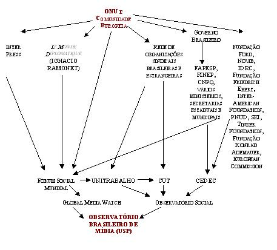

|
|
Observatório de Mídia da USP: bilionário esquema de poder Olavo de Carvalho
Qualquer tipo de pretensão do Observatório Brasileiro de Mídia da USP à isenção e idoneidade em matéria da crítica da mídia é uma camuflagem ridícula. Por Olavo de Carvalho. As notícias abaixo foram compiladas e reproduzidas literalmente de sites pertencentes às próprias organizações mencionadas ou a entidades que lhes são abertamente simpáticas. Não acrescentei uma só palavra, apenas os intertítulos e indicações de fontes, entre colchetes ou depois de cada trecho. Meus comentários vêm em separado, no final. A USP funda o Observatório Brasileiro de Mídia “A Universidade de São Paulo (USP) lança, nesta quarta-feira (22/09), o Observatório Brasileiro de Mídia, ligado ao Departamento de Jornalismo da Escola de Comunicações e Arte (ECA). A iniciativa visa analisar a cobertura feita pela imprensa dos mais diversos assuntos abordados na mídia. O primeiro trabalho será apresentado nesta quarta sobre a cobertura eleitoral em São Paulo, aproveitando o momento político que o Brasil está vivendo.” Fonte: Quem paga as contas? “Para desenvolver o projeto, a USP conta com o apoio da Global Media Watch e o Observatório Social, que ajudam a pagar os dois coordenadores de pesquisa e seis pesquisadores que trabalham diariamente na análise do jornalismo impresso.” Fonte: id. Ibid. Que é a Global Media Watch? “No Fórum Social Mundial de Porto Alegre, uma iniciativa cidadã de ‘vigilância’ dos meios de comunicação foi lançada conjuntamente pelo jornal Le Monde Diplomatique e pela agência Inter Press. A Global Media Watch nasceu e terá sede em Paris. Novamente, a iniciativa coube a Ignácio Ramonet, diretor do Monde Diplomatique e pai espiritual do Fórum de Porto Alegre como um todo.” Fonte: http://www.lecordelier.com/index.php?action=article&id_article=13699&id_rubrique=1025 Que é a Inter Press Service? “A IPS desempenha um papel-chave no Fórum Social Mundial nas áreas de mídia, informação e comunicação. Exemplos de parcerias de distribuição [da IPS] incluem serviços de rádio na África e na América Latina, o serviço de língua portuguesa produzido no Brasil em cooperação com a Agência Envolverde [http://www.envolverde.com.br], a tradução e distribuição de acordos em línguas asiáticas, o intercâmbio de notícias em francês com a Infosud [http://www.infosud.org/] e o suplemento Tierramérica, produzido por grande número de jornais latino-americanos em cooperação com a UNDP [Programa de Desenvolvimento das Nações Unidas: http://www.undp.org/] e a UNEP [Programa Ambiental das Nações Unidas: http://www.unep.org/].” Fonte: http://www.ips.org/ Quem manda no “Observatório Social”?
”O Observatório é uma iniciativa da CEDEC (Centro de Estudos de Cultura Contemporânea), UNITRABALHO (Rede Inter-Universitária de Estudos e Pesquisas sobre o Trabalho).” Que é o Centro de Estudos de Cultura Contemporânea?
“Desde a sua fundação o Cedec tem contado com o apoio de agências de financiamento e órgãos governamentais como a FAPESP (Fundação de Amparo à Pesquisa do Estado de São Paulo), a Finep (Financiadora de Estudos e Projetos), o CNPq (Conselho Nacional de Desenvolvimento Científico e Tecnológico), vários Ministérios, a ENAP (Escola Nacional de Administração Pública) e secretarias estaduais e municipais. Dentre as agências estrangeiras, entidades como Fundação Ford, Novib (Organização Holandesa para a Cooperação Internacional de Desenvolvimento), IDRC (International Development Research Centre), ILDES (Fundação Friedrich Ebert), Inter-American Foundation, PNUD (United Nations Development Programme), SEI (Stockholm Environment Institute), Tinker Foundation, Fundação Konrad-Adenauer e European Commission também têm apoiado esta instituição.” Fonte: http://www.cedec.org.br/instituicoes_de_apoio.htm Quais são os parceiros da Unitrabalho? “São considerados parceiros sociais da Unitrabalho todas as instituições que tenham as mesmas preocupações que a Rede sobre o mundo do trabalho. A Rede faz parcerias com entidades dos trabalhadores, organizações não governamentais e organismos de Estado, nacionais e internacionais, relacionados ao Mundo do Trabalho, tendo realizado projetos financiados ou em parceria com as seguintes instituições: · Confederação Nacional dos Metalúrgicos – CNM/CUT · Ministério do Trabalho e Emprego - MTE · Confederação Holandesa de Trabalhadores – FNV Fonte: http://www.unitrabalho.org.br/principal.htm
Comentários A complexa rede de relações que sustentam o Observatório da USP pode ser resumida no seguinte diagrama:
 Tempos atrás tive ocasião de apontar aqui o caráter intrinsicamente fraudulento de um órgão que, apresentando-se com o nome de “Centro de Mídia Independente” e posando de nanico em valoroso combate contra a “grande mídia”, era ele próprio um órgão da grande mídia, milionário o bastante para sustentar seus escritórios em pelo menos cento e dois países. Agora, uma fraude jornalística maior ainda, sustentada em grande parte com dinheiro público, se arma diante dos nossos olhos: o Observatório Brasileiro de Mídia da Universidade de São Paulo, sob a fachada de uma entidade científica isenta, devotada a rigorosos estudos sobre o comportamento da mídia nacional, é na verdade um elo na malha internacional de um complexo e bilionário esquema de poder, cujo topo está situado nos centros mesmos do governo mundial: ONU e União Européia. Suas conexões, como se vê pelo esquema, são variadas na forma e coerentes na substância política: trata-se de mais um canhão na bateria anti-americana e anti-israelense a serviço dos mais formidáveis poderes político-econômicos deste mundo. O elemento essencial deste novo fenômeno é que o instrumento de ação recém-criado, ao apresentar-se como entidade voltada à “observação e vigilância” da mídia, omite totalmente do público o fato de que ele próprio emana das mesmas fontes internacionais que já determinam totalmente a orientação hegemônica do noticiário nacional. O pouco de divergência e discussão que resta na nossa mídia com relação às disputas entre partidos locais mal basta para camuflar a acachapante unanimidade ideológica da mídia brasileira no tocante às questões internacionais. Instigado por essa unanimidade, o povo brasileiro é hoje um repetidor servil da propaganda anti-americana e dos slogans do sr. John Kerry, cuja difusão se torna ainda mais fácil porque suprimidas dos jornais e das TVs todas as fontes que possam contrariá-los. A orientação global do esquema que sustenta o observatório da USP é exatamente a mesma que já impera na totalidade da nossa mídia, e a nova entidade só poderá contribuir para eliminar ainda mais toda possibilidade de divergência substantiva de opiniões no debate nacional. O Observatório pode cumprir essa missão mesmo antes e independentemente de constituída a Agência Nacional de Jornalismo (ANJ). Não há necessidade de expor aqui, uma por uma, as organizações que perfazem essa rede e a sua respectiva orientação ideológica, pois elas mesmas se autodefinem nos trechos acima citados. Não custa, porém, acrescentar ao diagrama algumas breves informações sobre duas delas. A CUT, um dos elos importantes da cadeia, já declarou, ao Jornal do Brasil de 05 de maio de 1993, que tinha na sua folha de pagamentos nada menos de oitocentos jornalistas – mais que qualquer grande jornal deste país. Integrando-se ao Observatório, ela soma à sua condição de empregadora o estatuto de fiscal, completando o domínio que exerce sobre essas oitocentas consciências, se é que assim cabe chamá-las. A Fundação Ford é um dos pilares financeiros do mal no mundo. Nascida de uma empresa que teve notórios envolvimentos com o nazismo e com a ditadura soviética, ela sustenta generosamente uma multidão de entidades e movimentos que carregam as bandeiras “politicamente corretas” da Nova Ordem Mundial. Com essa rede de conexões, toda pretensão do Observatório à isenção e idoneidade em matéria da crítica da mídia é, desde a base, uma camuflagem ridícula que só pode enganar mesmo aos próprios uspianos, bem treinados para isso desde os seus primeiros dias de faculdade, senão já desde a escola elementar.
|

|

Home
- Informações - Textos
- Links
- E-mail